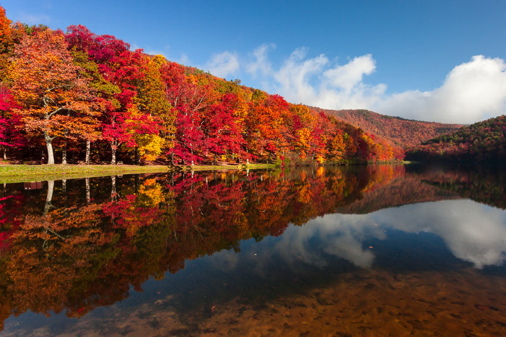

Autumn

Autumn, also known as fall in American and Canadian English, is one of the four temperate seasons. Some facts:
- Autumn marks the transition from summer to winter, in September (Northern Hemisphere) or March (Southern Hemisphere), when the duration of daylight becomes noticeably shorter and the temperature cools down considerably.
- One of its main features is the shedding of leaves from deciduous trees.
- Some cultures regard the autumnal equinox as "mid-autumn", while others with a longer temperature lag treat it as the start of autumn.
- Popular culture in North America associates Labor Day, the first Monday in September, as the end of summer and the start of autumn; certain summer traditions, such as wearing white, are discouraged after that date.
All Seasons!